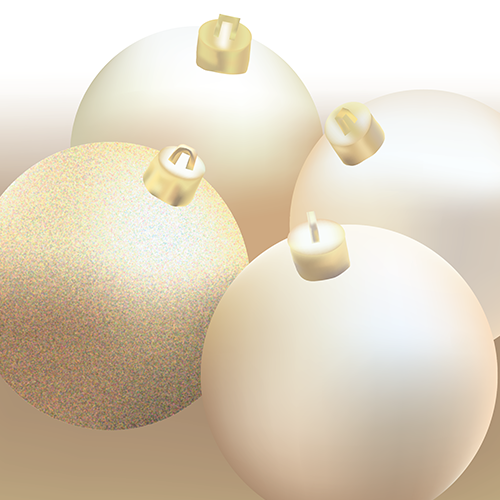
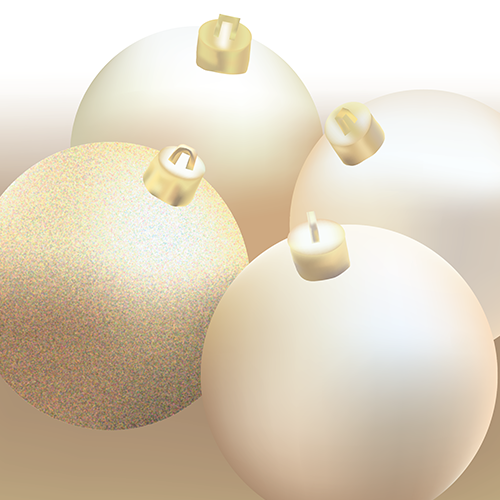

Works
 



My name is Samantha, but I prefer to go by Sam. I have a general education A.A. degree from SSC. I also completed the technical certificate for Graphic Design Support. I am curretly completing the technical certificate for Social Media and Web Applications. For high school I attended Crooms Academy of Information Technology for my first two years and my second two years were at Seminole High School, where I graduated from. In general, I enjoy being creative. I like drawing, writing, singing, painting, etc. Aside from creating, I also like playing video games and reading.